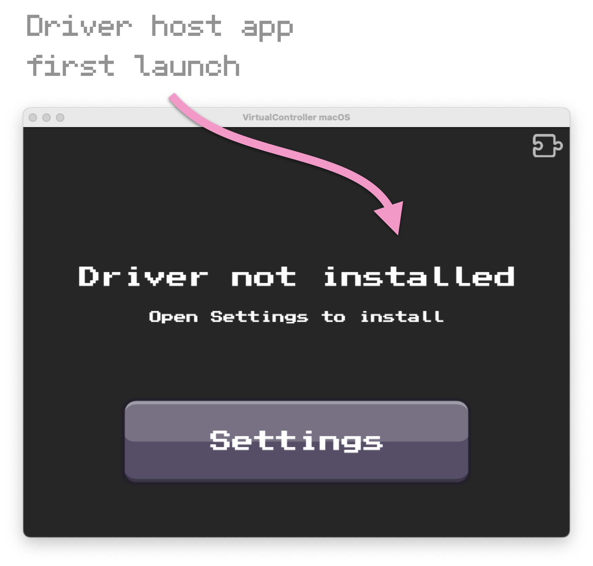
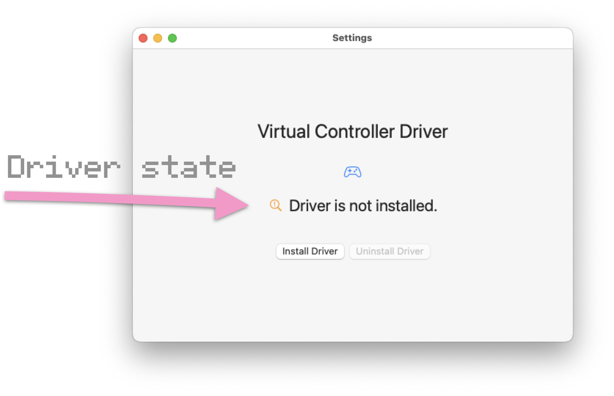
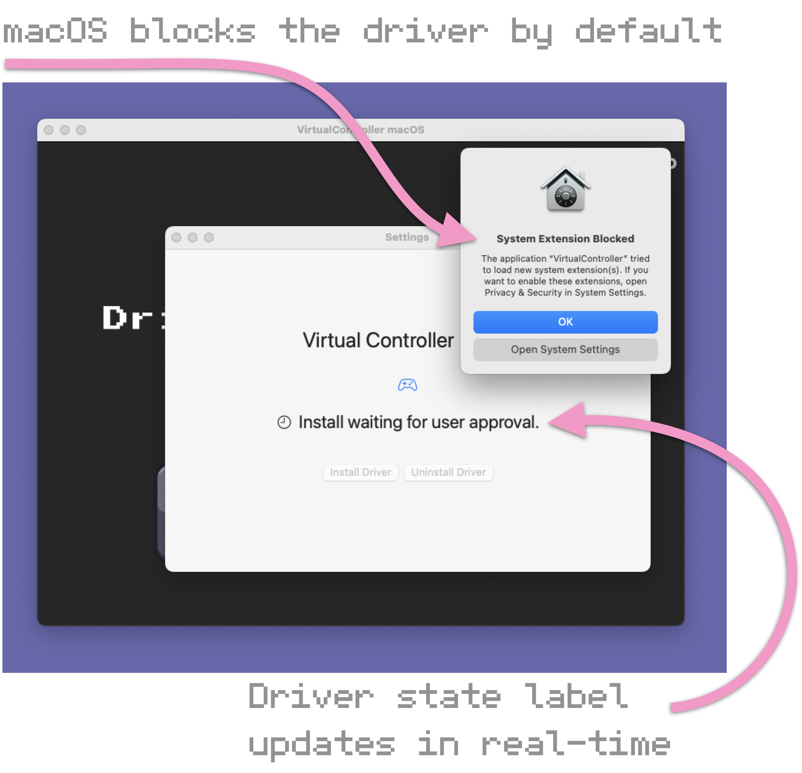
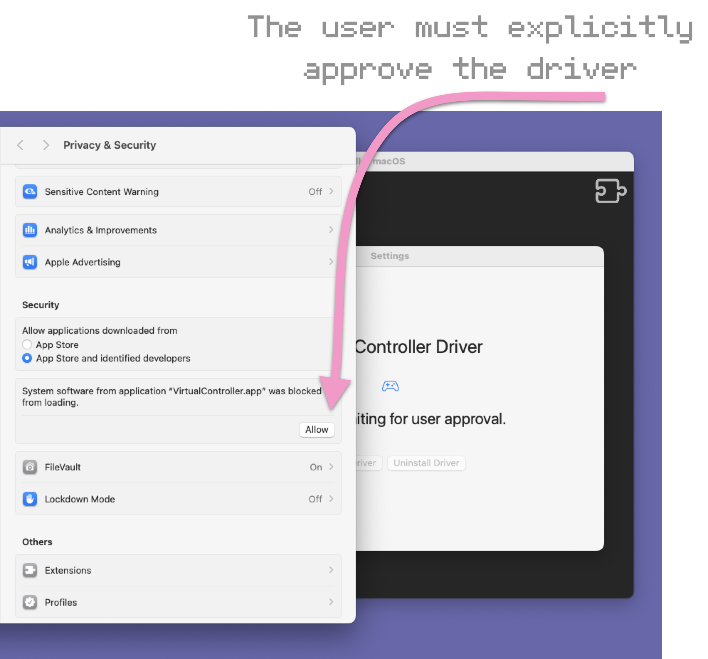
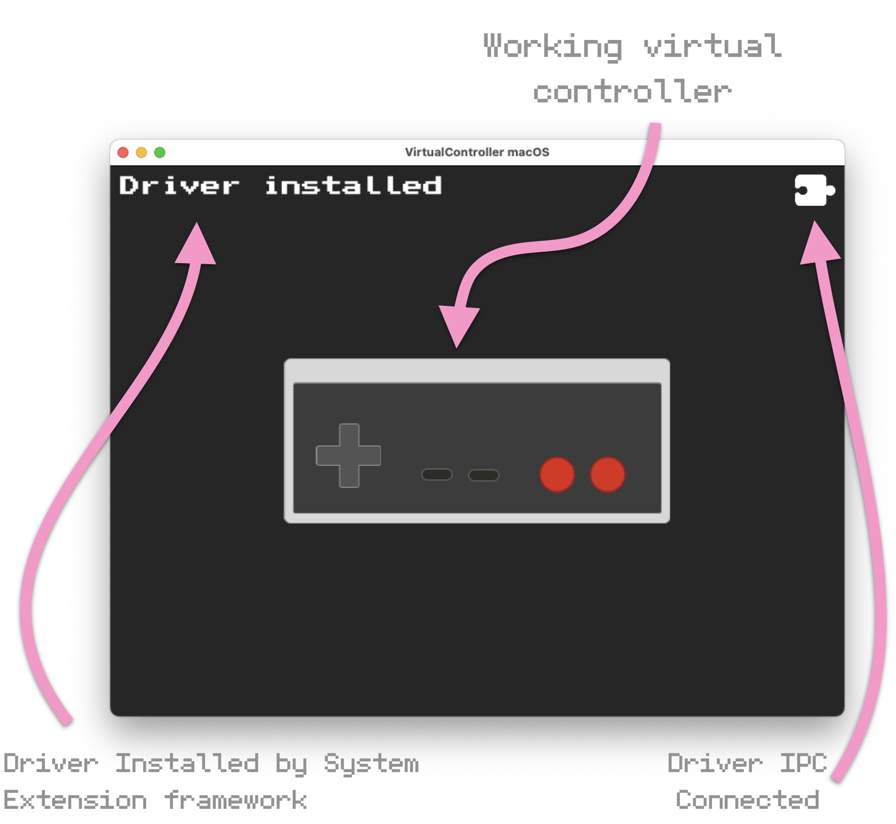
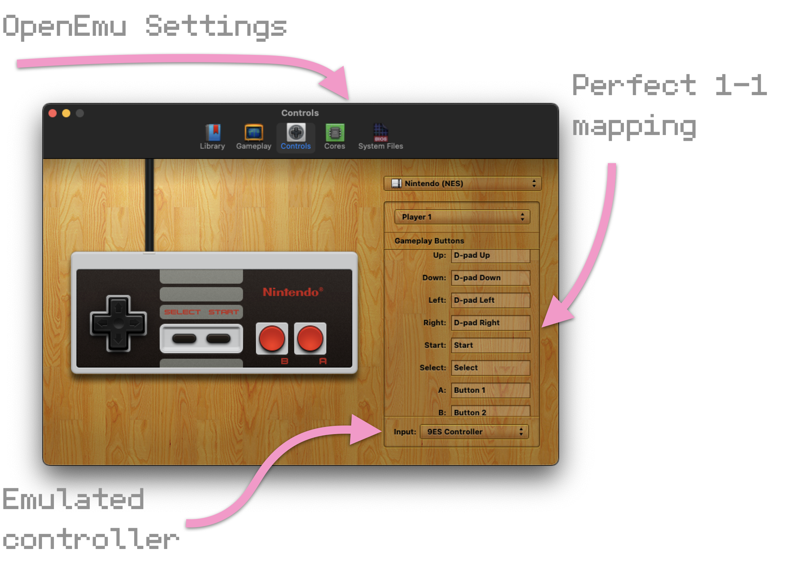

Introducing Virtual Controller
I’m making an open source virtual game controller iPhone app and macOS driver
The project is an iPhone app that emulates retro game controllers and a device driver that makes the virtual controller appear to macOS as physical devices. Thus, the iPhone can be a controller for any game or app that supports USB HID game controllers on a Mac (and possibly any iPad with an M-series chip).

I started this open source project because nothing available comes remotely close to meeting my requirements.
My requirements for the project are as follows:
- The project is open source
- The app emulates real-world retro devices without setup or configuration.
- The driver makes the emulated device indistinguishable from a physical device without setup or configuration
- The iPhone app can be distributed on the iOS App Store
- The Mac app and driver can be distributed on the Mac App Store
- The iPhone app and driver can communicate without setup or configuration
The project currently meets all my requirements!
Progress
- A working driver that can be installed, recognized by macOS, and loaded by the operating system
- A driver host app that installs the driver, connects to the driver's user service, and displays a virtual controller
- An emulated NES controller that is usable from the host app
- Apps such as OpenEmu recognize the emulated device as a working HID game controller
- An iPhone app that displays the emulated NES controller and connects to the driver
Screenshots
First launch of the macOS app. On macOS, a driver is bundled in a host app that manages the driver (installing, updating, and uninstalling). This makes it possible to distribute the driver on the App Store.
The label shows the state of the driver in real-time.
macOS security policy blocks the driver from being installed until the user explicitly allows loading it.
I find this process tedious, but it's the Apple way. C'est la vie.
After user approval, the app's UI instantly updates. It displays a label showing that the driver is installed, and it shows an icon that informs the user the app has an open connection to the driver. Finally, the virtual controller UI is rendered and is now usable.
Apps like OpenEmu can begin using the virtual controller as if there were a physical USB HID game controller attached to the Mac.
A longer higher quality demo of the driver in action.
Next steps
Make the iPhone app talk to the driver and transmit its button state changes.
Last modified: 2025-05-06 03:01:59 -0500 CDT